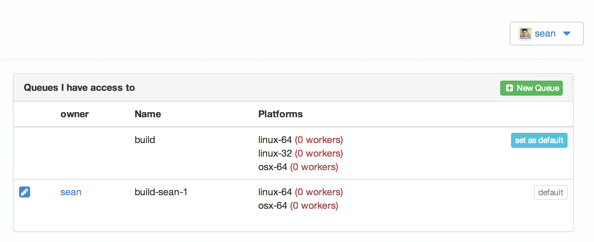
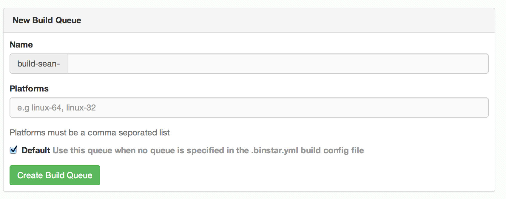

{% from "macros.html" import section, subsection %}
{% extends "layout.html" %}
{% block main %}
{% call section('purpose') %}
# Purpose
Binstar provides a default public queue that is mannaged by continuum analytics.
The the purpose of the binstar build queue is to allow any user to add a build worker for their
organization or user account. User build queues are private and the owner can controll who may build
on their queue.
Note: you should already be comfortable submitting jobs to binstar
build before creating a new build queue
{% endcall %}
{% call section('adding-a-queue') %}
# Add a build queue to your account
In your browser navigate to
[https://alpha.binstar.org/settings/build-queue](https://alpha.binstar.org/settings/build-queue)
And select "New Queue"

Once there, you will be prompted to fill out the following form:

* **Name**: must be a unique name, your queue name will always be prefixed with `build--`
* **Platforms**: must be a comma seporated list of platforms you plan on running build workers from.
The currenlty supported platforms are `osx-64`, `linux-64` and `linux-32`
* **Default**: The if selected, all build jobs submitted to your account will go to this queue
unless otherwise specified
## Modify the build queue
Navigate to your build queue to edit the properties from there you may:
* Modify the list of platforms your queue supports
* Give other users access to build on your queue
Warning: If you do this, these users may run arbitrary scripts on make sure that
they are trusted
* Set the queue as default
* View the list of running workers
{% endcall %}
{% call section('adding-a-worker') %}
# Add a build worker to process jobs on your queue
First you must install binstar-build version 0.6.0 or greater
conda install -c https://conda.binstar.org/binstar binstar-build
You only need to do this step once,
if you have already done this on another machine point your browser to
your [settings/access](https://binstar.org/settings/access) page and copy your **binstar-workers** token
to the `~/binstar.token` file on the build-machine:
binstar auth --create --name build-workers --scopes api:build-worker > ~/binstar.token
Once this is complete run the worker, this will start a worker process that runs forever.
binstar-build -t $(<~/binstar.token) worker
You may want to run this process under a service like [supervisord](http://supervisord.org/)
to ensure that it runs forever
{% endcall %}
{% call section('test-your-queue') %}
# Test your build queue
From any machine (prefrebly not on your build worker machine) submit a binstar build with the
`--queue` option.
binstar-build submit --queue
{% endcall %}
{% endblock %}